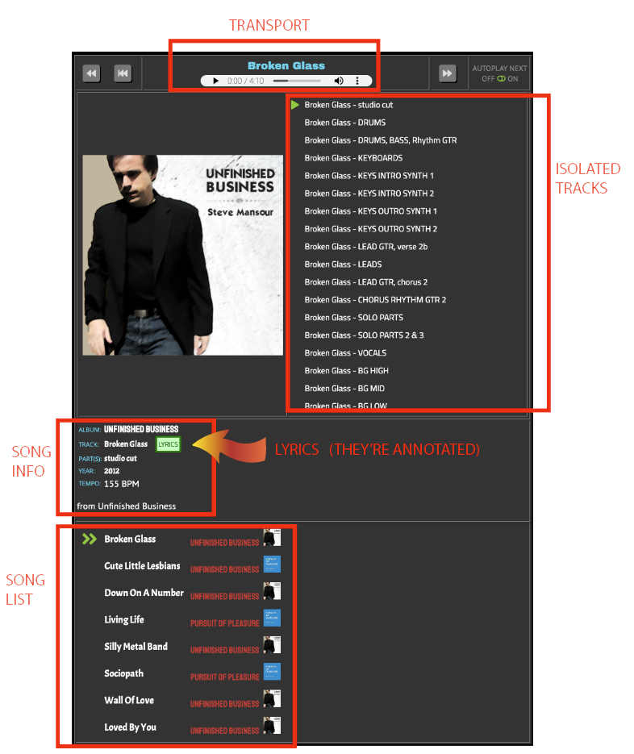

Instructions For Using The Band SiteThe band site is where I put resources for people in the band. The full studio cuts are there, but the main purpose of the band site is to provide the isolated instrument and vocal mixes to help you to learn parts. Be careful not to turn up the volume until you hear the isolated part you are trying to learn. The background music is at a very low volume, if you turn it up to before the isolated part comes in you'll probably blast your eardrums 😊 Each section of the page is labeled in the pic below. Here’s a quick explanation of each section: |
|
| TRANSPORT | The top section has the mp3 player buttons. |
| ISOLATED TRACKS | lists all the different isolated tracks available for the selected song. Just click on the isolated tracks you want, then press the play button (the green triangle). You can also download the mp3 file, if you prefer, using the vertical "..." on the right side of the player transport (on some browsers you'll have to right-click to get that dropdown menu). |
| SONG INFO | provides some extra details for the song, the most important one is the green LYRICS button. It links to special annotated lyrics: Sections of the song are labeled (Verse, Push, Chorus, ...), this helps newbie’s learn our lingo Harmonies are shown in bold We can add notes on the right -- so they don't get lost and everyone can see them, and I’ve added some already |
| SONG LIST | The bottom section lists all the songs you can choose from. Just click on the song title you’re interested in. The arrows will move to that song, and all the sections above will populate with info about that song. |
|  | |